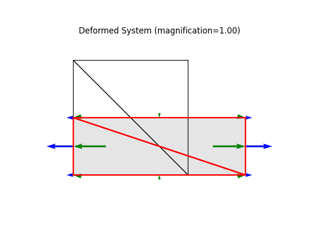
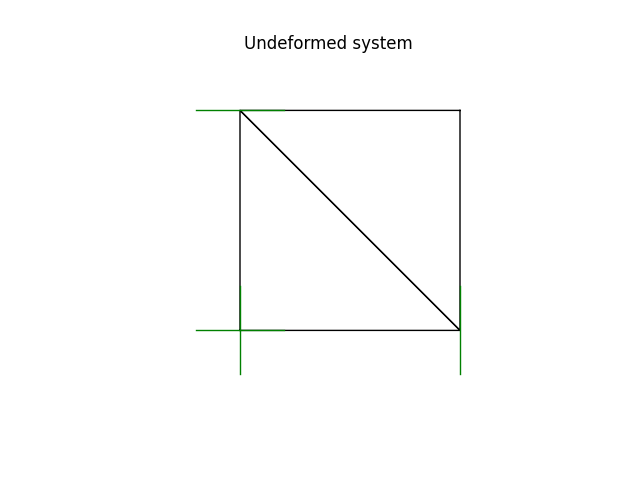
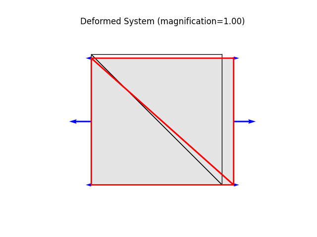

Note
Go to the end to download the full example code
A square patch made of two triangular plate elements
- Basic implementation test with applied loads.
Testing the tangent stiffness computation for a
Triangle6()(using quadratic shape functions).
Using
elements.linear.Triangle6(see Triangle6 class)materials.PlaneStress(see PlaneStress material class)
free free
^ ^
| |
3--6--2 -> free
|\ b | >
| \ | >
7 8 5 > (w = 1.0)
| \ | >
| a \| >
0--4--1 -> free
width: 10.
height: 10.
Material parameters: St. Venant-Kirchhoff, plane stress
E = 10.0
nu = 0.30
t = 1.0
Element loads:
node 0: [ 0.0, 0.0]
node 1: [ 10./6, 0.0]
node 2: [ 10./6, 0.0]
node 3: [ 0.0, 0.0]
node 4: [ 0.0, 0.0]
node 5: [ 10.*2/3, 0.0]
node 6: [ 0.0, 0.0]
node 7: [ 0.0, 0.0]
node 8: [ 0.0, 0.0]
2nd Piola-Kirchhoff stress:
S_XX = w = 1.000
S_YY = S_XY = S_YX = S_ZZ = 0.000
Green Lagrange strain:
eps_XX = (1/E) ((1.000) - (0.30)(0.000)) = 0.100
eps_YY = (1/E) ((0.000) - (0.30)(1.000)) = -0.030
eps_XY = eps_YX = 0.000
eps_ZZ = -nu * (eps_XX + eps_YY) = -0.021
Stretches:
lam_X = sqrt(1 + 2 eps_XX) = 1.095
lam_Y = sqrt(1 + 2 eps_YY) = 0.9695
Displacements:
ux = (lam_X - 1) * x, uy = (lam_Y - 1) * y
node 0: [ 0.000, 0.000 ]
node 1: [ 0.954, 0.000 ]
node 2: [ 0.954, -0.305 ]
node 3: [ 0.000, -0.305 ]
node 4: [ 0.477, 0.000 ]
node 5: [ 0.954, -0.1525 ]
node 6: [ 0.477, -0.305 ]
node 7: [ 0.954, -0.1525 ]
node 8: [ 0.477, -0.1525 ]
Author: Peter Mackenzie-Helnwein
from femedu.examples import Example
from femedu.domain import System, Node
from femedu.solver import NewtonRaphsonSolver
from femedu.elements.linear import Triangle6
from femedu.materials import PlaneStress
class ExamplePlate02b(Example):
def problem(self):
params = dict(
E = 10., # Young's modulus
nu = 0.3, # Poisson's ratio
t = 1.0, # thickness of the plate
fy = 1.e30 # yield stress
)
a = 10. # length of the plate in the x-direction
b = 10. # length of the plate in the y-direction
model = System()
model.setSolver(NewtonRaphsonSolver())
nd0 = Node( 0.0, 0.0)
nd1 = Node( a, 0.0)
nd2 = Node( a, b)
nd3 = Node( 0.0, b)
nd4 = Node( a/2, 0.0)
nd5 = Node( a, b/2)
nd6 = Node( a/2, b)
nd7 = Node( 0.0, b/2)
nd8 = Node( a/2, b/2)
nd0.fixDOF('ux', 'uy')
nd1.fixDOF('uy')
nd3.fixDOF('ux')
model.addNode(nd0, nd1, nd2, nd3, nd4, nd5, nd6, nd7, nd8)
elemA = Triangle6(nd0, nd1, nd3, nd4, nd8, nd7, PlaneStress(params))
elemB = Triangle6(nd2, nd3, nd1, nd6, nd8, nd5, PlaneStress(params))
model.addElement(elemA, elemB)
elemA.setSurfaceLoad(face=2, pn=1.0)
elemB.setSurfaceLoad(face=2, pn=1.0)
model.setLoadFactor(1.0)
nd0.setDisp([0.0, 0.0])
nd1.setDisp([5.0, 0.0])
nd2.setDisp([5.0, -5.0])
nd3.setDisp([0.0, -5.0])
nd4.setDisp([2.5, 0.0])
nd5.setDisp([5.0, -2.5])
nd6.setDisp([2.5, -5.0])
nd7.setDisp([0.0, -2.5])
nd8.setDisp([2.5, -2.5])
elemA.updateState()
elemB.updateState()
model.report()
model.plot(factor=1.0, filename="plate02b_deformed.png")
model.setLoadFactor(0.0)
# model.solver.assemble()
# model.solver.showKt()
#
model.solve()
model.report() # activate this line for lots of debug info
model.plot(factor=0.0, title="Undeformed system", filename="plate02b_undeformed.png", show_bc=1)
model.setLoadFactor(1.0)
model.solve()
model.plot(factor=1.0, filename="plate02b_deformed.png")
model.report()
Run the example by creating an instance of the problem and executing it by calling Example.run()
if __name__ == "__main__":
ex = ExamplePlate02b()
ex.run()
- 
- 
- 
System Analysis Report
=======================
Nodes:
---------------------
Node_0:
x: [0. 0.]
fix: ['ux', 'uy']
u: [0. 0.]
Node_1:
x: [10. 0.]
fix: ['uy']
u: [5. 0.]
Node_2:
x: [10. 10.]
u: [ 5. -5.]
Node_3:
x: [ 0. 10.]
fix: ['ux']
u: [ 0. -5.]
Node_4:
x: [5. 0.]
u: [2.5 0. ]
Node_5:
x: [10. 5.]
u: [ 5. -2.5]
Node_6:
x: [ 5. 10.]
u: [ 2.5 -5. ]
Node_7:
x: [0. 5.]
u: [ 0. -2.5]
Node_8:
x: [5. 5.]
u: [ 2.5 -2.5]
Elements:
---------------------
Triangle6_0: nodes ( Node_0 Node_1 Node_3 Node_4 Node_8 Node_7 )
material: PlaneStress
strain 0: xx=5.000e-01 yy=-5.000e-01 xy=0.000e+00 zz=-1.332e-16
stress 0: xx=3.846e+00 yy=-3.846e+00 xy=0.000e+00 zz=0.000e+00
strain 1: xx=5.000e-01 yy=-5.000e-01 xy=0.000e+00 zz=-0.000e+00
stress 1: xx=3.846e+00 yy=-3.846e+00 xy=0.000e+00 zz=0.000e+00
strain 2: xx=5.000e-01 yy=-5.000e-01 xy=0.000e+00 zz=-6.661e-17
stress 2: xx=3.846e+00 yy=-3.846e+00 xy=0.000e+00 zz=0.000e+00
Triangle6_1: nodes ( Node_2 Node_3 Node_1 Node_6 Node_8 Node_5 )
material: PlaneStress
strain 0: xx=5.000e-01 yy=-5.000e-01 xy=-1.243e-15 zz=1.665e-16
stress 0: xx=3.846e+00 yy=-3.846e+00 xy=-4.782e-15 zz=0.000e+00
strain 1: xx=5.000e-01 yy=-5.000e-01 xy=-1.776e-16 zz=-0.000e+00
stress 1: xx=3.846e+00 yy=-3.846e+00 xy=-6.832e-16 zz=0.000e+00
strain 2: xx=5.000e-01 yy=-5.000e-01 xy=-5.329e-16 zz=-0.000e+00
stress 2: xx=3.846e+00 yy=-3.846e+00 xy=-2.050e-15 zz=0.000e+00
+
System Analysis Report
=======================
Nodes:
---------------------
Node_0:
x: [0. 0.]
fix: ['ux', 'uy']
u: [0. 0.]
Node_1:
x: [10. 0.]
fix: ['uy']
u: [-2.74270882e-16 0.00000000e+00]
Node_2:
x: [10. 10.]
u: [-3.75335890e-17 9.40052095e-13]
Node_3:
x: [ 0. 10.]
fix: ['ux']
u: [0.00000000e+00 9.35824759e-13]
Node_4:
x: [5. 0.]
u: [-1.09176363e-15 1.89627068e-16]
Node_5:
x: [10. 5.]
u: [-1.04508531e-15 4.68811630e-13]
Node_6:
x: [ 5. 10.]
u: [-7.83403772e-16 9.38323184e-13]
Node_7:
x: [0. 5.]
u: [-1.01035854e-17 4.68883938e-13]
Node_8:
x: [5. 5.]
u: [-3.49428627e-16 4.68905883e-13]
Elements:
---------------------
Triangle6_0: nodes ( Node_0 Node_1 Node_3 Node_4 Node_8 Node_7 )
material: PlaneStress
strain 0: xx=0.000e+00 yy=9.392e-14 xy=8.680e-17 zz=-2.818e-14
stress 0: xx=3.096e-13 yy=1.032e-12 xy=3.338e-16 zz=0.000e+00
strain 1: xx=0.000e+00 yy=9.392e-14 xy=1.332e-16 zz=-2.818e-14
stress 1: xx=3.096e-13 yy=1.032e-12 xy=5.124e-16 zz=0.000e+00
strain 2: xx=0.000e+00 yy=9.348e-14 xy=4.643e-17 zz=-2.804e-14
stress 2: xx=3.082e-13 yy=1.027e-12 xy=1.786e-16 zz=0.000e+00
Triangle6_1: nodes ( Node_2 Node_3 Node_1 Node_6 Node_8 Node_5 )
material: PlaneStress
strain 0: xx=0.000e+00 yy=9.370e-14 xy=-3.333e-29 zz=-2.811e-14
stress 0: xx=3.089e-13 yy=1.030e-12 xy=-1.282e-28 zz=0.000e+00
strain 1: xx=-3.331e-16 yy=9.370e-14 xy=4.930e-32 zz=-2.801e-14
stress 1: xx=3.053e-13 yy=1.029e-12 xy=1.896e-31 zz=0.000e+00
strain 2: xx=-3.331e-16 yy=9.392e-14 xy=-5.329e-16 zz=-2.808e-14
stress 2: xx=3.060e-13 yy=1.031e-12 xy=-2.050e-15 zz=0.000e+00
/usr/local/lib/python3.11/site-packages/matplotlib/quiver.py:632: RuntimeWarning: Mean of empty slice.
amean = a.mean()
/usr/local/lib/python3.11/site-packages/numpy/core/_methods.py:129: RuntimeWarning: invalid value encountered in scalar divide
ret = ret.dtype.type(ret / rcount)
+
System Analysis Report
=======================
Nodes:
---------------------
Node_0:
x: [0. 0.]
fix: ['ux', 'uy']
u: [0. 0.]
Node_1:
x: [10. 0.]
fix: ['uy']
u: [0.97589106 0. ]
Node_2:
x: [10. 10.]
u: [ 0.9822336 -0.29401513]
Node_3:
x: [ 0. 10.]
fix: ['ux']
u: [ 0. -0.30913831]
Node_4:
x: [5. 0.]
u: [0.48372136 0.01177229]
Node_5:
x: [10. 5.]
u: [ 1.03775018 -0.16201532]
Node_6:
x: [ 5. 10.]
u: [ 0.49635742 -0.31211121]
Node_7:
x: [0. 5.]
u: [-0.05499666 -0.13905014]
Node_8:
x: [5. 5.]
u: [ 0.49190996 -0.14993612]
Elements:
---------------------
Triangle6_0: nodes ( Node_0 Node_1 Node_3 Node_4 Node_8 Node_7 )
material: PlaneStress
strain 0: xx=1.007e-01 yy=-2.829e-02 xy=-8.825e-03 zz=-2.172e-02
stress 0: xx=1.013e+00 yy=2.106e-02 xy=-3.394e-02 zz=0.000e+00
strain 1: xx=1.024e-01 yy=-3.282e-02 xy=-8.966e-04 zz=-2.086e-02
stress 1: xx=1.017e+00 yy=-2.317e-02 xy=-3.448e-03 zz=0.000e+00
strain 2: xx=1.133e-01 yy=-3.449e-02 xy=8.642e-03 zz=-2.365e-02
stress 2: xx=1.131e+00 yy=-5.494e-03 xy=3.324e-02 zz=0.000e+00
Triangle6_1: nodes ( Node_2 Node_3 Node_1 Node_6 Node_8 Node_5 )
material: PlaneStress
strain 0: xx=1.008e-01 yy=-2.741e-02 xy=-8.708e-03 zz=-2.202e-02
stress 0: xx=1.018e+00 yy=3.116e-02 xy=-3.349e-02 zz=0.000e+00
strain 1: xx=1.029e-01 yy=-3.345e-02 xy=-9.294e-04 zz=-2.084e-02
stress 1: xx=1.021e+00 yy=-2.824e-02 xy=-3.575e-03 zz=0.000e+00
strain 2: xx=1.128e-01 yy=-3.341e-02 xy=8.732e-03 zz=-2.382e-02
stress 2: xx=1.130e+00 yy=4.732e-03 xy=3.358e-02 zz=0.000e+00
Total running time of the script: (0 minutes 1.503 seconds)